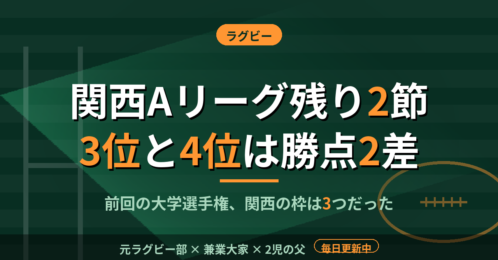
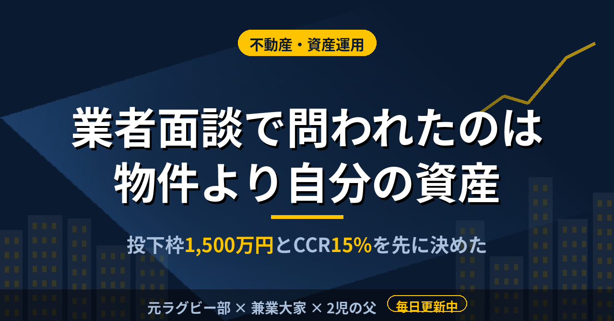
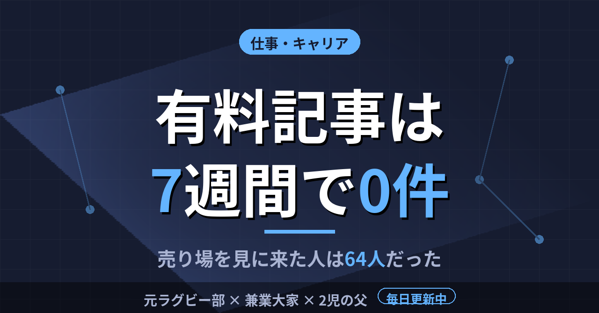

hohemaro15
ラグビー20年、不動産1棟。調べてから書く記録
このサイトについて
小学5年でラグビーを始めて、大学まで20年続けた。大阪の激戦区で6年、同志社大で4年。ポジションはユーティリティバックス。
今はメーカーで設備の電気を担当しながら、兵庫県尼崎市に木造9戸の一棟アパートを運用している。2児の父。
経験談だけで終わらせないために、書く前に必ず制度と統計を調べることにしている。数字が確認できなかった話は書かない。
書いていること
ラグビー
小5から大学まで20年。大阪の激戦区で見たこと、カテゴリが上がるたびに起きたこと。
不動産・資産運用
2016年に検討を始めて2026年に1棟目。判断基準と、断り続けた10年の話。
健康・トレーニング
増量の失敗と成功、サプリで肝臓の数値を悪くした経験、続けている設計。
子育て・家族
2歳と0歳を育てながらの時間の使い方と、資産形成の時間軸。
最近の記事
-
 ゴルフ
ゴルフ
飛ぶボールの規制、アマは5ヤード以下。月1回以上回る僕が2030年の線を読んだ
社会人になってからゴルフを本格的に始め、シーズン中は月2〜3回ラウンドしている。取引先と回る日は、ティーショットの飛距離がその日の話題になりやすい。その飛距離に、ルールを作る側が上限をかけ直そうとしている。…
-
 不動産・資産運用
不動産・資産運用
家賃保証会社の国の登録は任意、要件は純資産1,000万円。9戸の大家が中身を読んだ
1棟目の管理会社に任せている仕事を書き出すと、リーシング、電話の一次受け、家賃の集金、そして「滞納時の保証会社への確認」が並ぶ。月5,000円の定額で頼んでいる半管理の中で、最後の一行だけは、中身をよく知らないまま契約し…
-
 子育て・家族
子育て・家族
16歳未満の扶養控除は2011年から0円。それでも年末調整の紙に2人の子を書く理由
11月、会社から年末調整の書類が回ってきた。扶養控除等申告書のいちばん下、「住民税に関する事項」の欄に、2歳と0歳の2人を書いた。控除がない子どもを、なぜ毎年書くのか。今年は書く前に調べてみた。…
-

ラグビー関西Aリーグは残り2節、同志社は勝点14の3位。大学選手権の枠を元部員が数えた
11月の週末になると、関西大学Aリーグの順位表を開く癖がいまも抜けない。同志社で4年間プレーした僕にとって、この時期の勝点1つの重さは体が覚えている。2026年のリーグは全7節のうち5節を終え、母校は3位にいる。…
-

不動産・資産運用勧誘の禁止事項は2011年に3つ増えた。業者面談で整理したのは自分の資産だった
2棟目を探し始めてから、不動産会社の担当者と会う機会が増えた。物件の話をしに行ったつもりでも、最初に聞かれるのは僕自身のことだ。勤め先、勤続年数、金融資産、そのうちいくら出せるのか。面談を重ねるうちに、自分の資産背景を一…
-

仕事・キャリア240本書いて有料記事は0件。売り場を見に来た人は7週間で64人だった
9月下旬に、980円の有料記事を出した。不動産の1棟目を探すときに僕が使っている、物件の判定シートだ。7週間たった今日まで、売れたのは0件だった。…